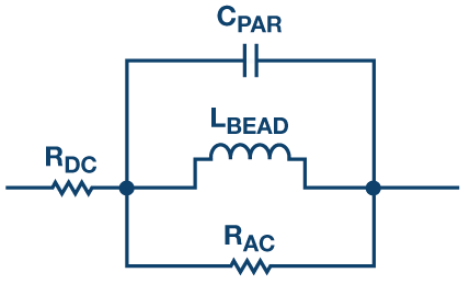

最基本的就是一个inductance。目的是choking off or suppressing high-frequency AC signals, and allowing the passage of low-frequency and DC signals。事实上理想是只pass DC，reject其他所有frequency。越高的frequency会遇到越强的resistance (impedance)。选择合适的L值 - the choke (or the inductor) must have a high impedance over the range of frequencies it is designed to suppress.
FB是RF choke的一种。（得名原因：Chokes are normally built with a coil of insulated wires wounded on a magnetic core or a circular-shaped “bead” of ferrite material strung on a wire. They are often wound in complex patterns in order to reduce their self-capacitance.）
Simplified circuit model:
更多细节详见这里。